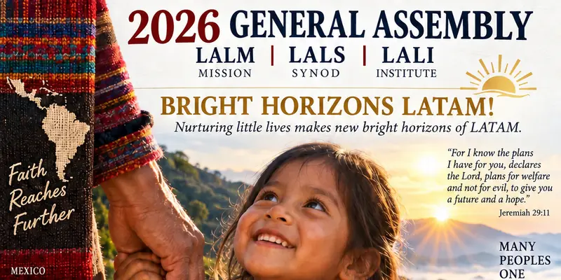
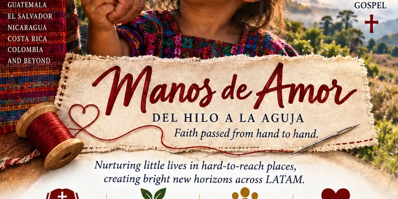
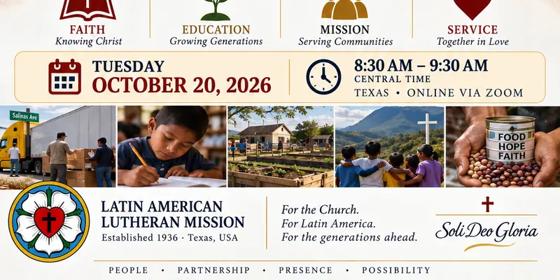

CLARION ☩ · Invitación oficialCLARION ☩ · Official Invitation
Asamblea General · Reunión Anual 2026
2026 General Assembly · Annual Meeting
BRIGHT HORIZONS LATAM! ☀️🌎
MANOS DE AMOR · DEL HILO A LA AGUJA
Fe transmitida de mano en mano.
Faith passed from hand to hand.
LALM · LALS · LALIMartes 20 de octubre de 2026 · 9:30–10:30 AM hora de Texas (sede)Tuesday, October 20, 2026 · 9:30–10:30 AM Texas (Central)8:30–9:30 AM hora de Centroamérica y México · En línea por Zoom8:30–9:30 AM Central America & Mexico time · Online via Zoom
Cuenta regresiva a la Asamblea 2026Countdown to the 2026 Assembly
--díasdays
--horashours
--minmin
--segsec
● En vivo ahora · entra a Zoom● Live now · join Zoom
La Asamblea 2026 concluyó. Gracias. ☩The 2026 Assembly has concluded. Thank you. ☩



InvitaciónInvitation
Hay lugares a los que no es fácil llegar.
Comunidades separadas por distancia, por fronteras, por pobreza o por falta de recursos. Y, sin embargo, precisamente allí encontramos pequeñas vidas llenas de posibilidades.
La Misión Luterana Latinoamericana tiene el honor de invitar a pastores, líderes, educadores, colaboradores, congregaciones, familias y amigos a nuestra Asamblea General y Reunión Anual 2026.
Tres instituciones. Distintas responsabilidades. Un Evangelio. Una misión. Un horizonte compartido.
Some places are not easy to reach.
Communities separated by distance, borders, poverty or lack of resources. And yet, precisely there, we find little lives full of possibility.
The Latin American Lutheran Mission warmly invites pastors, directors, ministry leaders, educators, partners, congregations, families and friends to the 2026 General Assembly and Annual Meeting.
Three institutions. Different responsibilities. One Gospel. One shared horizon.
Manos de AmorManos de Amor
La misión muchas veces comienza con algo muy pequeño.
Una comida.Una lección.Un huerto.Una Biblia abierta junto a un niño.Una maestra que llega hasta una comunidad difícil de alcanzar.Una familia que descubre que no está sola.Una mano extendida hacia otra mano.
Eso es Manos de Amor. Nutrir pequeñas vidas en lugares difíciles de alcanzar es sembrar nuevos horizontes para América Latina.
Mission often begins with something very small.
A meal.A lesson.A garden.A Bible opened with a child.A teacher reaching a hard-to-reach community.A family discovering it is not alone.A hand placed into another hand.
This is Manos de Amor. Nurturing little lives in hard-to-reach places creates bright new horizons across LATAM.
Del hilo a la agujaFrom thread to needle
Así ha viajado el Evangelio.
El hilo es lo que se nos ha confiado. Las manos lo reciben. La aguja lo lleva adelante. Y, con paciencia, algo nuevo se forma.
Fe recibida. De padres a hijos, de pastores a congregaciones.
Fe vivida. El Evangelio se vuelve presencia, trabajo y misericordia.
Fe enseñada. De maestros a estudiantes, de misioneros a comunidades.
Fe transmitida. La siguiente generación recibe el hilo.
So the Gospel has traveled.
The thread is what has been entrusted to us. The hands receive it. The needle carries it forward. And patiently, something new is formed.
Faith inherited. From parents to children, from pastors to congregations.
Faith lived. The Gospel becomes presence, work and mercy.
Faith taught. From teachers to students, from missionaries to communities.
Faith carried forward. The next generation receives the thread.
Orden del díaOrder of business
Lo que haremos juntos
Compartiremos el trabajo realizado, escucharemos informes de regiones y ministerios, revisaremos nuestra mayordomía y miraremos las prioridades para 2027.
10:12 Continuidad de la Junta Directiva y moción de consejeras
10:22 Archivo institucional y otros asuntos
10:25 Oración (Rev. Obispa Mariana Méndez Orellana) y clausura
Hora de Texas (CDT). Informes regionales: Colombia, Rev. Harold Lever · Perú, Rev. Alex Moromisato · Costa Rica, Rev. Javier Ramos · Nicaragua, Rev. River Martínez · El Salvador, Rev. Luis Abarca · Guatemala, Marvin Altan · Pastoral Agrícola, Rev. Amílcar López · Migración, Lic. Fredy Gularte · Estados Unidos, Rev. Mariana Méndez. Los informes completos se entregan por escrito.
Según el Artículo XII de los Estatutos (By-Laws) vigentes de LALM; quórum de 15 miembros. Los Estatutos son un documento distinto de los Artículos de Incorporación originales de 1936.
Preguntas para discernir
¿Cómo permanecemos presentes donde el ministerio es difícil?
¿Cómo fortalecemos la educación teológica a través de las fronteras?
¿Cómo preparamos pastores, maestros, misioneros y líderes laicos para la próxima generación?
¿Cómo puede ayudarnos la tecnología sin perder la presencia humana en el centro de la misión?
¿Cómo seguimos poniendo el Evangelio fielmente en las manos de quienes vienen después?
What we will do together
We will reflect on the Mission's work, review ministry and educational developments, hear regional reports, consider the stewardship of our resources, and identify priorities for 2027.
9:30 Opening, devotion (Pastor Jacobo Rodríguez · Jeremiah 29:11) and quorum
9:38 Agenda and approval of the 2025 minutes
9:45 Nine regional reports · 2 minutes each
10:03 Annual reports: Secretary · Treasurer · Director
10:07 Follow-up on 2025 resolutions
10:10 2027 priorities
10:12 Board Continuity and Appointment of Advisers
10:22 Institutional archive and other business
10:25 Prayer (Rt. Rev. Bishop Mariana Méndez Orellana) and adjournment
Texas time (CDT). Regional reports: Colombia, Rev. Harold Lever · Peru, Rev. Alex Moromisato · Costa Rica, Rev. Javier Ramos · Nicaragua, Rev. River Martínez · El Salvador, Rev. Luis Abarca · Guatemala, Marvin Altan · Agricultural Ministry, Rev. Amílcar López · Migration Ministry, Lic. Fredy Gularte · United States, Rev. Mariana Méndez. Full reports are submitted in writing.
Per Article XII of the current LALM By-Laws; quorum of 15 members. The By-Laws are a separate document from the original 1936 Articles of Incorporation.
Questions we will ask
How do we remain present where ministry is difficult?
How do we strengthen theological education across borders?
How do we prepare pastors, teachers, missionaries and lay leaders for the next generation?
How can technology help us reach people without losing the human presence at the center of Christian mission?
How do we continue placing the Gospel faithfully into the hands of those who come next?
Tres instituciones · Una misiónThree institutions · One mission
Misión · Sínodo · InstitutoMission · Synod · Institute
LALM · MISIÓNMISSION
Latin American Lutheran Mission
Presencia, misericordia, evangelización y servicio.
Presence, mercy, evangelism and service.
LALS · SÍNODOSYNOD
Latin American Lutheran Synod
Conecta congregaciones, pastores, ministerios y naciones en la confesión común de Jesucristo.
Connecting congregations, pastors, ministries and nations around our common confession of Jesus Christ.
LALI · INSTITUTOINSTITUTE
Latin American Lutheran Institute
Formación por medio de educación teológica, aprendizaje digital y liderazgo.
Formation through theological education, digital learning and leadership development.
✝︎FEFAITH
Conocer a Cristo
Knowing Christ
🌱EDUCACIÓNEDUCATION
Formar generaciones
Growing generations
🌎MISIÓNMISSION
Servir comunidades
Serving communities
❤️SERVICIOSERVICE
Juntos en amor
Together in love
Muchos pueblos · Un EvangelioMany peoples · One Gospel
El centro no cambia.The center does not change.
Desde Texas y la frontera con México hasta México, Guatemala, El Salvador, Nicaragua, Costa Rica, Colombia y más allá: Jesucristo permanece en el centro de nuestra misión.
From Texas and the border to Mexico, Guatemala, El Salvador, Nicaragua, Costa Rica, Colombia and beyond: Jesus Christ remains the center of our mission.
«Porque yo sé los pensamientos que tengo acerca de vosotros, dice Jehová, pensamientos de paz, y no de mal, para daros el fin que esperáis.»
“For I know the plans I have for you,” declares the Lord, “plans for welfare and not for evil, to give you a future and a hope.”
Jeremías 29:11Jeremiah 29:11
Acceso en vivoLive access
Únase a la AsambleaJoin the Assembly
FechaDateMartes 20 oct 2026Tue, Oct 20, 2026
HoraTime9:30 AM Texas (sede)
Centroamérica y MéxicoCentral America & Mexico8:30 AM